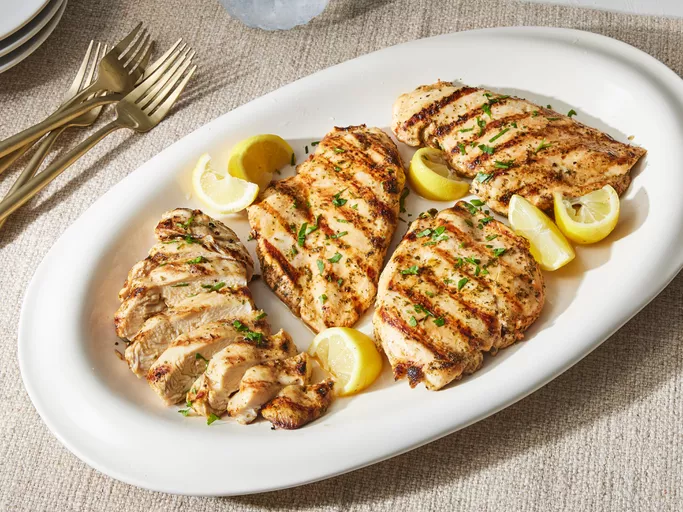

Grilled Chicken Breasts
Home

Source: allrecipes.com
Description
Easy and versatile grilled chicken breast.
Ingredients
- 4 skinless, boneless chicken breast halves
- A quarter cup lemon juice, plus wedges for serving
- A quarter cup olive oil
- 2 teaspoons dried oregano or parsley
- 1 teaspoon seasoning salt
- Half teaspoon ground black pepper
- Half teaspoon onion powder
Steps
- Gather the ingredients.
- Preheat an outdoor grill for medium-high heat, and lightly oil the grate.
- Working with one chicken breast at a time, place chicken breast between two sheets of plastic wrap or parchment paper on a cutting board. Using a meat mallet or a rolling pin, gently pound each breast to 1/2 inch thickness.
- Add lemon juice, olive oil, dried oregano or parsley, seasoning salt, black pepper, and onion powder to a large zip-top bag; add chicken and press out as much air as possible before sealing bag. Gently massage chicken to distribute marinade. Marinate chicken in the refrigerator for at least 30 minutes or up to 12 hours.
- Preheat grill to medium-high and lightly oil the grate.
- Place chicken breasts, smooth-side down on preheated grill; cook, covered, until no longer pink and juices run clear, about 5 minutes per side. An instant-read thermometer inserted into the center should read at least 165º F (74º C).
- Transfer chicken to a cutting board and tent with aluminum foil. Let rest 5 minutes.
- Serve with lemon wedges.